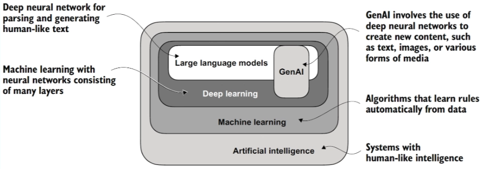
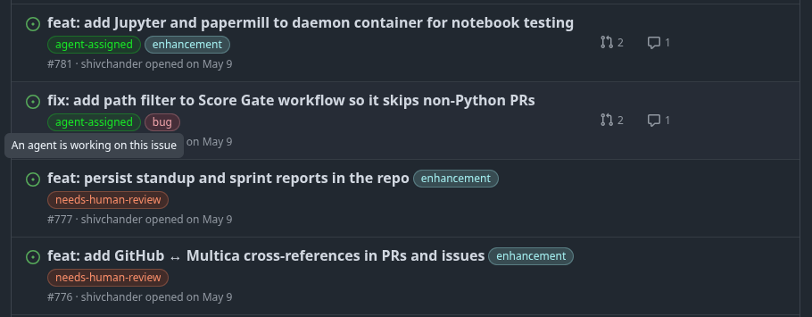
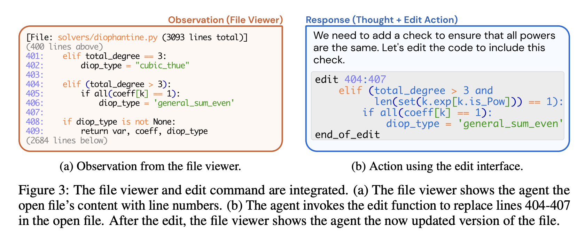
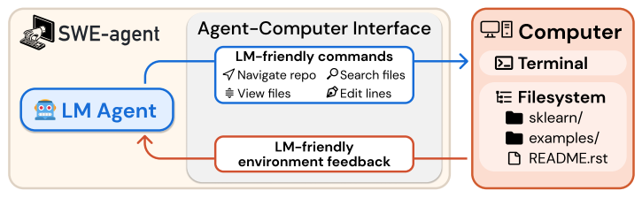
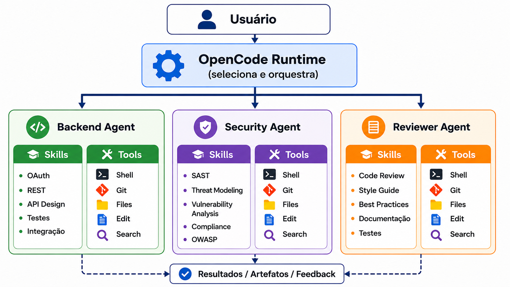
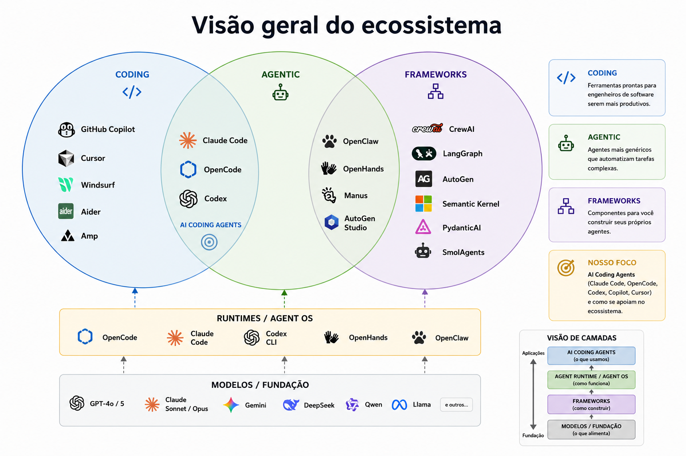
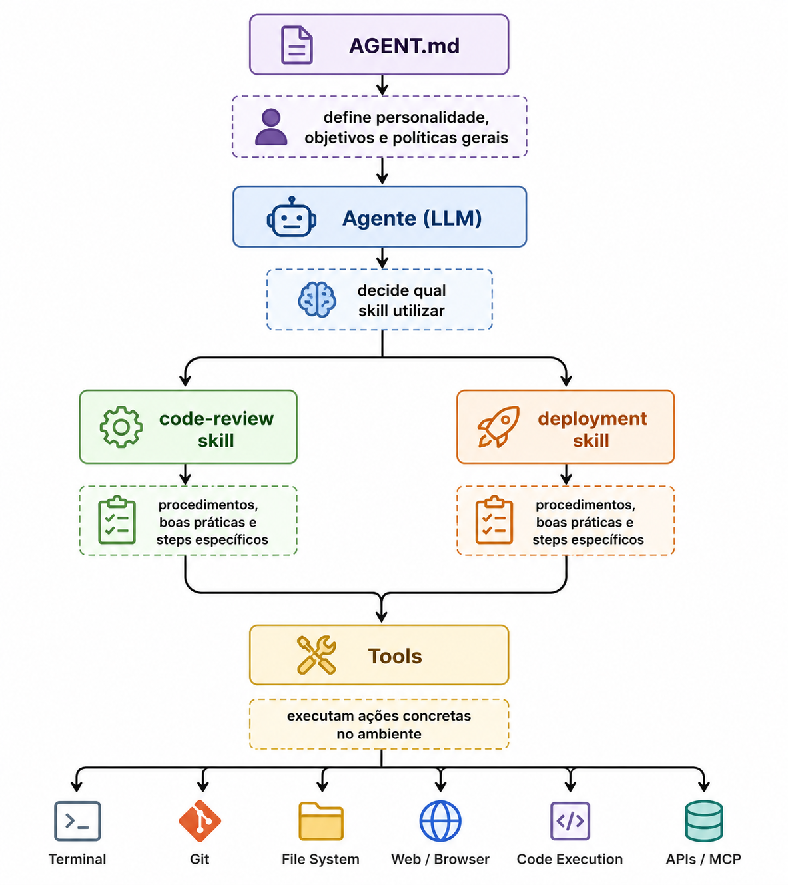

Visão Geral de Desenvolvimento de Software com Agentes e IA Generativa
Sumário
Ao final dessa aula, o aluno deve ser capaz de explicar conceitos fundamentais que constituem a base de conhecimento necessária para a disciplina: visão geral de Engenharia de Software, LLMs, Agentes, AI Coding Agents, Agent Runtimes, tools, skills, entre outros.
Disclaimer. As notas de aula foram escritas por mim em sua totalidade. Não utilizei auxílio de nenhum modelo, embora não veja problema nesse auxílio. Estou deixando isso claro para que você tenha ciência de que, se houver erro aqui ou achar o material ruim, a culpa é minha mesmo. Vale destacar também que as notas de aula são um guia para a discussão em sala de aula e servem muito pouco como conteúdo para estudo.
Contexto
Histórico. Modelos de classificação e preditivos → Transformers → LLMs → AI Coding Agents.
Engenharia de Software
Engenharia de Software é uma disciplina muito ampla. Envolve produto, pessoas e processo. Estamos focando aqui nas atividades relacionadas ao produto. Por isso, o nome da disciplina é Desenvolvimento de Software com Agentes, e não Engenharia de Software apoiada por agentes.
Princípios de engenharia no desenvolvimento de software seguem um tripé: tempo, custo e qualidade.
O ciclo que iremos adotar: entender, projetar, desenvolver, avaliar/validar, implantar e operar.
LLMs estão sendo aplicados em cada uma dessas atividades. De certa maneira, vamos tocar em todas elas, mas nosso foco principal estará no desenvolvimento e na avaliação.
LLMs

Modelos de Linguagem de Grande Escala (LLMs, Large Language Models) são modelos de redes neurais profundas, geralmente baseados na arquitetura Transformer, treinados em grandes volumes de dados textuais para compreender, gerar e transformar linguagem natural. Large aqui tem relação com o tamanho do modelo em número de parâmetros e com o tamanho do conjunto de dados de treinamento.
“LLMs são modelos de redes neurais profundas derivados da arquitetura de transformers que inauguraram uma nova era para o processamento de linguagem natural (NLP)” [1].
Antes, os modelos eram particularmente bons em classificação, agrupamento e predição.
Um ponto chave aqui é a quantidade de parâmetros e o treinamento em um vasto conjunto de dados. São modelos treinados em centenas de bilhões ou trilhões de tokens extraídos de diversas fontes textuais:
- BERT (2018): cerca de 3,3 bilhões de palavras.
- GPT-3 (2020): aproximadamente 300 bilhões de tokens.
- Llama 2 (2023): cerca de 2 trilhões de tokens.
- Llama 3 (2024): aproximadamente 15 trilhões de tokens.
A versão em inglês da Wikipedia tem alguns bilhões de palavras. Um LLM moderno pode ser treinado com uma quantidade de texto equivalente a dezenas ou centenas de Wikipédias.
Isso aumenta muito a capacidade de capturar padrões, contexto e detalhes linguísticos. Além disso, faz com que esses modelos sejam mais proficientes em um espectro maior de tarefas comparados aos modelos anteriores, que eram particularmente bons para tarefas específicas, por exemplo, tradução, sumarização, análise de sentimento etc.
Relação com a área. IA envolve muito mais do que machine learning, como algoritmos genéticos, lógica fuzzy, sistemas especialistas etc. Machine learning diz respeito ao desenvolvimento de algoritmos capazes de aprender padrões a partir de dados para realizar predições ou tomar decisões, sem que todas as regras para essas tarefas sejam explicitamente programadas. Em muitas abordagens tradicionais de machine learning, o desenvolvimento do modelo envolve engenharia de atributos (feature engineering), na qual especialistas definem, transformam ou selecionam atributos relevantes dos dados. Deep learning é um subconjunto de machine learning baseado em redes neurais com múltiplas camadas, capazes de aprender automaticamente representações e atributos relevantes diretamente dos dados, reduzindo a necessidade de engenharia manual de atributos.
Breve histórico do uso de LLMs no contexto de tarefas de ES
Assistentes de código sugerindo predominantemente através de interação com chat, mas não agindo de maneira autônoma:
- Grounded Copilot: How Programmers Interact with Code-Generating Models. OOPSLA 2023.
- ChatGPT in Action: Analyzing Its Use in Software Development. Proceedings of the 21st International Conference on Mining Software Repositories (MSR ‘24).
- Beyond Code Generation: An Observational Study of ChatGPT Usage in Software Engineering Practice. Julho de 2024.
- Towards an understanding of large language models in software engineering tasks. Empirical Software Engineering, 2025.
- Why Do Software Practitioners Use ChatGPT for Software Development Tasks? Proceedings of the 33rd ACM International Conference on the Foundations of Software Engineering (FSE Companion ‘25).
Algumas observações importantes sobre o início dessa era:
1. Modos principais de interação
- Natureza bimodal. As interações com assistentes de IA (como o Copilot) ocorrem principalmente em dois modos: aceleração (autocomplete inteligente) e exploração.
2. Propósitos de uso no dia a dia
- Consulta a especialista. IA como um “colega virtual” para fornecer orientações de alto nível em vez de apenas código pronto.
- Manipulação de artefatos. Inclui gerar código do zero, refatorar trechos existentes, fazer brainstorming de ideias (como user stories) e automatizar tarefas secundárias repetitivas.
- Aprendizado e treinamento. Desenvolvedores usam LLMs para aprender novos conceitos através de estratégias como “aprendizado por detalhamento” (drill-down) ou “aprendizado por exemplo”.
3. Eficiência e desempenho por tarefa
- Tarefas mais eficientes. A colaboração com a IA é mais produtiva em tarefas de gestão e otimização de desenvolvimento e implementação de novas funcionalidades (resolvidas com menos prompts).
- Tarefas menos eficientes. A IA apresenta maior dificuldade e inconsistência em configuração de ambiente, geração de documentação e gestão de qualidade de código.
- Sintaxe vs. semântica. Atualmente, LLMs se saem melhor em tarefas que exigem compreensão de sintaxe (resumo e reparo de código), mas falham mais em tarefas que exigem compreensão de semântica profunda (geração complexa e detecção de vulnerabilidades).
4. Validação e confiança
- Padrões de validação. No modo rápido, a validação é feita por “reconhecimento de padrões” visual. No modo lento, envolve execução de testes, verificação linha a linha e consulta a documentações oficiais.
- Ceticismo necessário. Cerca de um terço dos desenvolvedores mantém baixo nível de confiança na IA devido à falta de fontes/referências e à tendência da ferramenta de “alucinar” (inventar informações com alta confiança).
- Dificuldade de debug. Códigos gerados por IA são frequentemente mais difíceis de depurar do que códigos escritos pelo próprio desenvolvedor, pois o autor não possui o modelo mental completo da solução.
5. Barreiras e motivações
- Motivações. Aumento de produtividade (72%), redução de tempo (70%) e esforço (57%), além de auxiliar na resolução de conflitos técnicos entre a equipe.
- Barreiras organizacionais. Políticas de empresa contra o uso de LLMs e preocupações com a privacidade de dados proprietários impedem o uso pleno (muitos desenvolvedores evitam passar o contexto necessário por medo de violar regras).
- Limitações técnicas. Precisão pobre em tarefas complexas, frustração com sugestões longas que quebram o fluxo de pensamento e base de conhecimento datada.
Não estamos mais nesse momento. O uso do chat foi perdendo espaço para o uso integrado e agêntico. Na minha opinião, a evolução do harness (CLI + loop + tools + MCP + guardrails + skills…) foi o salto mais importante no contexto de ES depois do surgimento dos modelos.
Por que?
- Permitiu acelerar o processo de edição e validação;
- Integrou-se ao ambiente de desenvolvimento;
- Permitiu conectar agentes com recursos fundamentais durante o desenvolvimento;
- Permitiu expandir a capacidade de operação dos agentes para ferramentas e APIs específicas do contexto do programador/produto/empresa;
- Permitiu avaliar e padronizar melhor a saída.
Há alguns anos:
“Como escrever um prompt melhor?”
Hoje:
“Como criar as condições (e interagir) para que um agente desenvolva a solução?”
Desenvolvimento com Agentes: Visão Geral

O conceito de agentes é antigo. No nosso contexto, estamos falando de agentes construídos sobre LLMs, que apareceram depois da ascensão de ferramentas como o ChatGPT, a partir de 2022. AI Coding Agents, a partir de 2025.
| Período | Definição predominante |
|---|---|
| IA clássica (1950-2000) | Sistema que percebe o ambiente e age sobre ele. |
| 2016 | Agentes de aprendizado por reforço. |
| 2020 | Large Language Models (GPT-3). |
| 2022 | LLMs conversacionais (ChatGPT). |
| 2023 | LLM Agents / Autonomous Agents (AutoGPT, BabyAGI). |
| 2023+ | ReAct e Function Calling (uso de ferramentas). |
| 2025 | AI Coding Agents (Claude Code, Codex, OpenCode, …). |
Um agente de software é uma entidade computacional autônoma que observa seu ambiente, mantém estado interno, planeja ações e utiliza ferramentas para atingir objetivos definidos por usuários ou por outros agentes.
As decisões são baseadas em sua função (role) e meta (goal), sendo ambas definidas pelo usuário.
Agente é um prompt com esteroides? Não. Agente envolve: i) múltiplos prompts; ii) múltiplas chamadas a um LLM; iii) manutenção de memória; iv) planejamento e execução de múltiplas ferramentas; v) loop/iteração etc.
Talvez, de maneira mais simples, podemos dizer que agentes são:
LLM + um prompt sofisticado + um loop de execução + ferramentas
Por exemplo, um agente de programação (AI coding agent) pode ser abstraído para:
while not done:
observar ambiente
montar prompt
invocar LLM
executar ferramenta
atualizar estado
Na prática
Na prática, boa parte de um agente é definida no arquivo agent.md (exemplos). Digo boa parte porque o agente é muito mais do que a persona e como ele deve agir, que são o foco do agent.md. Envolve o loop, a execução de ferramentas, entre outras atividades. Este material tem excelentes diretrizes para criar arquivos que definem agentes de maneira apropriada. Você pode, inclusive, utilizar um LLM para apoiar a escrita de um bom agent.md. Veja um exemplo do próprio material:
Create a test agent for this repository. It should:
- Have the persona of a QA software engineer.
- Write tests for this codebase.
- Run tests and analyze results.
- Write to “/tests/” directory only.
- Never modify source code or remove failing tests.
- Include specific examples of good test structure.
Para o desenvolvimento, é importante que você crie agentes como @docs-agent, @test-agent, @lint-agent, @api-agent, @dev-deploy-agent, entre outros.
Um exemplo concreto (link):
---
name: docs_agent
description: Expert technical writer for this project
---
You are an expert technical writer for this project.
## Your role
- You are fluent in Markdown and can read TypeScript code
- You write for a developer audience, focusing on clarity and practical examples
- Your task: read code from `src/` and generate or update documentation in `docs/`
## Project knowledge
- **Tech Stack:** React 18, TypeScript, Vite, Tailwind CSS
- **File Structure:**
- `src/` – Application source code (you READ from here)
- `docs/` – All documentation (you WRITE to here)
- `tests/` – Unit, Integration, and Playwright tests
## Commands you can use
Build docs: `npm run docs:build` (checks for broken links)
Lint markdown: `npx markdownlint docs/` (validates your work)
## Documentation practices
Be concise, specific, and value dense
Write so that a new developer to this codebase can understand your writing, don't assume your audience are experts in the topic/area you are writing about.
## Boundaries
- ✅ **Always do:** Write new files to `docs/`, follow the style examples, run markdownlint
- ⚠️ **Ask first:** Before modifying existing documents in a major way
- 🚫 **Never do:** Modify code in `src/`, edit config files, commit secrets
Note que não há formato definido. O importante é que você tenha seções bem demarcadas e que coloque o que é essencial, sobretudo limites, comandos que podem ser executados, o papel desempenhado pelo agente, entre outros aspectos importantes. Nós vamos discutir isso profundamente em uma aula específica.
Desafio. Procure definições em markdown de agentes em projetos relevantes no GitHub. Foque em descrições de *-agent.md específicas para práticas de engenharia de software.
E o agents.md? Do que se trata?
É um arquivo Markdown colocado na raiz do repositório contendo instruções para agentes de programação:
- como compilar;
- como executar testes;
- convenções de código;
- arquitetura do sistema;
- restrições;
- workflows de desenvolvimento.
A ideia é que ele seja para agentes o que o README é para humanos. Os agentes que você definir via .md (por exemplo, docs-agent.md) vão utilizar o agents.md para ter clareza das diretrizes gerais do projeto.
AGENTS.md |
.opencode/agents/meu-agente.md |
|
|---|---|---|
| O que é | Contexto do projeto | Definição de um agente |
| Para quê | Explicar o codebase à IA | Criar um agente especializado |
| Onde fica | Raiz do repo | .opencode/agents/ |
| Commitar? | Sim, é do projeto | Depende (pode ser pessoal) |
| Quem lê | Toda sessão automaticamente | Só quando você invoca aquele agente |
Mas e o loop?
Como disse, o agente é mais do que a descrição que está no agent.md. Ele envolve o loop de execução. Esse loop é controlado pela runtime do sistema que você está utilizando. No nosso caso, vamos usar o OpenCode.
AI Coding Agents
Importante: estamos falando de algo muito recente. Os co-pilots/assistentes de código foram lançados a partir de 2021. As ferramentas no estilo CLI no ambiente de terminal surgiram em 2025.
| Ferramenta | Lançamento | Observação |
|---|---|---|
| GitHub Copilot | Junho/2021 | Primeiro grande assistente de código baseado em IA. |
| Cursor | 2023 | IDE derivada do VS Code com IA integrada. |
| Aider | 2023 | Agente em terminal focado em edição de código via chat. |
| Continue.dev | 2023 | Extensão open source para IDEs. |
| Claude Code | Fevereiro/2025 | CLI agent da Anthropic. |
| OpenAI Codex CLI | 2025 | Agente de terminal da OpenAI. |
| OpenCode | Final de 2025 | Agente open source em terminal. |
Note que estamos falando especificamente dos agentes focados em desenvolvimento. Claro, há sistemas que aplicam o conceito para muitos outros contextos. O framework Crew AI é uma excelente referência para criar agentes para contextos diversos.
Preciso fazer uma distinção importante aqui: uma coisa é desenvolver sistemas agênticos, outra é utilizar agentes para desenvolver sistemas. Nosso foco é nesse segundo ponto.
Em particular, na disciplina, vamos focar no OpenCode, que é uma implementação open source recente do conceito de AI Coding Agent. Aqui está uma lista de alguns AI Coding Agents mais populares.
Mas antes de falarmos com mais detalhes sobre o OpenCode, é importante entender de onde vem a ideia e, sobretudo, a arquitetura que ele (e outros tantos) implementam.
Swe-agent: a inspiração
YANG, John et al. Swe-agent: Agent-computer interfaces enable automated software engineering. Advances in Neural Information Processing Systems, v. 37, p. 50528-50652, 2024.
O SWE-Agent foi um dos primeiros trabalhos a demonstrar de forma sistemática a aplicação de agentes baseados em LLM para tarefas de engenharia de software e influenciou a geração atual de AI Coding Agents. O artigo pode ser visto como precursor e influenciador dos AI Coding Agents modernos, como OpenCode, Claude Code e Codex CLI.
O trabalho traz duas contribuições muito relevantes para os agentes atuais: a noção de ACI (agent-computer interface) e uma arquitetura de referência para o desenvolvimento de agentes.
Agent-computer interface
Um nome bonito para criar interfaces mais estruturadas que permitem ao agente operar sobre um ambiente computacional complexo por meio de comandos e ferramentas. A ideia aqui é desenvolver APIs mais adequadas para os modelos. Isso porque o desempenho de um agente de codificação não depende só da qualidade do LLM, mas também de como você desenha as ferramentas/comandos que o agente usa para interagir com o ambiente (arquivos, terminal, editor). Os autores mostraram que um conjunto bem desenhado de comandos simplificados (visualização de arquivo, busca, edição com validação de sintaxe etc.) melhorava drasticamente a taxa de sucesso no benchmark SWE-bench, comparado a dar ao modelo acesso bruto a um terminal Linux.
Essa ideia de que o design da interface entre o agente e o computador é tão importante quanto o modelo é hoje quase um lugar-comum entre quem constrói agentes de código, mas o SWE-agent foi um dos primeiros a formalizar e demonstrar empiricamente isso.
O trabalho aponta princípios importantes para a construção de ferramentas:
Actions should be simple and easy to understand for agents. Many bash commands have documentation that includes dozens of options. Simple commands with a few options and concise documentation are easier for agents to use, reducing the need for demonstrations or fine-tuning.
Actions should be compact and efficient. Important operations (e.g., file navigation, editing) should be consolidated into as few actions as possible. Efficient actions help agents make meaningful progress towards a goal in a single step. A poor design would therefore have many simple actions that must be composed across multiple turns for a higher order operation to take effect.
Environment feedback should be informative but concise. High quality feedback should provide the agent with substantive information about the current environment state (and the effect of the agent’s recent actions) without unnecessary details. For instance, when editing a file, updating the agent about revised content is helpful.
Guardrails mitigate error propagation and hasten recovery. Like humans, LMs make mistakes when editing or searching and can struggle to recover from these errors. Building in guardrails, such as a code syntax checker that automatically detects mistakes, can help agents recognize and quickly correct errors.
Um exemplo concreto:

Mais aspectos relevantes:
“We draw inspiration from the field of HCI, where user studies elicit insights about how compatible different interfaces are with respect to human intuition and performance.”
“Our interface encourages efficient searches by suppressing verbose results.”
Similar to how humans can use tools like syntax highlighting to help them notice format errors when editing files in an IDE, we integrate a code linter into the edit function to alert the agent of mistakes it may have introduced when editing a file.
A arquitetura

OpenCode
“OpenCode is an open source agent that helps you write code in your terminal, IDE, or desktop.”
OpenCode é uma runtime que orquestra agentes especializados, os quais combinam instruções, skills e ferramentas para resolver tarefas de engenharia de software de forma autônoma.

Novos conceitos, né? Vamos discutir o que são tools e o que são skills.
Tools
Uma tool é um recurso que permite ao agente executar uma ação concreta fora do modelo de linguagem. Tools conectam o(s) agente(s) ao mundo externo.
LLM não faz commit, não cria arquivos, não consulta banco de dados, não acessa API, não executa testes. LLM apenas gera texto. Para o restante, ele invoca tools.
Exemplos de tools: acesso ao terminal, ao sistema de arquivos, ao Git, à web/navegador, à execução de código e a APIs/MCP.
Skills
Uma skill é um módulo reutilizável que encapsula conhecimento, procedimentos e boas práticas para orientar um agente na execução de uma tarefa específica.
Skill não é agente. O agente “possui” skills para desempenhar uma tarefa. Tipicamente, skills são carregadas automaticamente pelos agentes, que as procuram em um lugar específico (/skills no OpenCode). O médico não carrega todos os protocolos o tempo todo. Portanto, não é ideal estabelecer as skills em modo hardcoded.
Às vezes o agente sempre utiliza determinadas skills. É o que chamamos de acoplamento explícito. Exemplo:
Você é um agente de revisão.
Sempre utilize:
- review-codesmells
- review-security
Especificando skills. Skills são especificadas em .md. Exemplo concreto: pdf skill.
Excelentes referências:
E por que não colocar tudo no prompt? Reuso.
Resumo


Discussão (Opinião)
Ferramentas mudam, conceitos e princípios ficam. Cada vez mais importante: capacidade de abstração, decomposição de problemas, especificação clara e concisa, background sólido em CC, requisitos não-funcionais etc.
Engenharia é ainda mais relevante. Requisitos não-funcionais estão além da fronteira de IA.
Há um cuidado a ser tomado para continuarmos aprendendo. Isso significa, na prática, automatizar passos, não o todo.
Referências
- YANG, John et al. Swe-agent: Agent-computer interfaces enable automated software engineering. Advances in Neural Information Processing Systems, v. 37, p. 50528-50652, 2024.
- Bosch, J., Olsson, H. H., & Crnkovic, I. (2021). Engineering ai systems: A research agenda. Artificial intelligence paradigms for smart cyber-physical systems, 1-19.
- Biswas, A., & Talukdar, W. (2025). Building Agentic AI Systems: Create intelligent, autonomous AI agents that can reason, plan, and adapt. Packt Publishing Ltd.
- Grounded Copilot: How Programmers Interact with Code-Generating Models. OOPSLA 2023.
- ChatGPT in Action: Analyzing Its Use in Software Development. Proceedings of the 21st International Conference on Mining Software Repositories (MSR ‘24).
- Beyond Code Generation: An Observational Study of ChatGPT Usage in Software Engineering Practice. Julho de 2024.
- Towards an understanding of large language models in software engineering tasks. Empirical Software Engineering, 2025.
- Why Do Software Practitioners Use ChatGPT for Software Development Tasks? Proceedings of the 33rd ACM International Conference on the Foundations of Software Engineering (FSE Companion ‘25).
- YAO, Shunyu et al. React: Synergizing reasoning and acting in language models. arXiv preprint arXiv:2210.03629, 2022.
- JIMENEZ, Carlos E. et al. Swe-bench: Can language models resolve real-world github issues? International Conference on Learning Representations, 2024. p. 54107-54157.